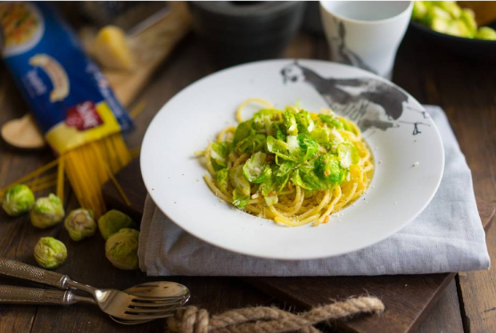

🍝 Паста без глютена с брюссельской капустини
📋 Ингредиенты
- Паста без глютена — 300 г
- Чеснок — 2 зубчика
- Оливковое масло — 30 г (~2 ст. л.)
- Брюссельская капуста — 100 г (свежая или замороженная)
- Пармезан тёртый — для подачи
- Перец чёрный свежемолотый — по вкусу
- Лёд для шоковой закалки (опционально)
👩🍳 Приготовление
- Сварите пасту до состояния al dente согласно инструкции на упаковке (безглютеновая часто варится чуть меньше). Откиньте на дуршлаг, сохранив немного воды.
- Пока паста варится, подготовьте капусту: если она замороженная, залейте кипятком на 2 минуты, затем слейте и залейте ледяной водой (можно добавить 10 кубиков льда) – это сохранит яркий зелёный цвет и хрусткость. Свежую просто разрежьте пополам.
- Разберите половинки капусты на отдельные листья (плотные серединки можно выбросить – они могут горчить).
- На сковороде разогрейте оливковое масло. Чеснок мелко нарубите и обжарьте до аромата (2–3 минуты).
- Бросьте капустные листья к чесноку, перемешайте и прогрейте 1–2 минуты. Долго жарить не надо – капуста уже почти готова.
- Выложите пасту на тарелку, сверху – капусту с чесночным маслом. Щедро посыпьте тёртым пармезаном и свежемолотым чёрным перцем.
- Готово, дорогие! Приятного аппетита! 🥬🍷
